<!DOCTYPE html>
<html lang="en">

<head>
  <meta charset="utf-8" />
    
  <meta name="viewport" content="width=device-width, initial-scale=1, maximum-scale=1" />
  <title>
     犬来八荒
  </title>
  <meta name="generator" content="hexo-theme-yilia-plus">
  
  <link rel="shortcut icon" href="/favicon.ico" />
  
  
<link rel="stylesheet" href="/css/main.css">

  
<script src="/js/pace.min.js"></script>


  

  

</head>

</html>

<body>
  <div id="app">
    <main class="content">
      
<section class="cover">
    
  <div class="cover-frame">
    <div class="bg-box">
      
    </div>
    <div class="cover-inner text-center text-white">
      <h1><a href="/">犬来八荒</a></h1>
      <div id="subtitle-box">
        
        <span id="subtitle"></span>
        
      </div>
      <div>
        
      </div>
    </div>
  </div>
  <div class="cover-learn-more">
    <a href="javascript:void(0)" class="anchor"><i class="ri-arrow-down-line"></i></a>
  </div>
</section>


<script src="https://cdn.jsdelivr.net/npm/typed.js@2.0.11/lib/typed.min.js"></script>

<div id="main">
  <section class="outer">
  <article class="articles">
    
    
    
    
    <article id="post-成果也是诸葛大力" class="article article-type-post" itemscope
  itemprop="blogPost" data-scroll-reveal>

  <div class="article-inner">
    
    <header class="article-header">
       
<h2 itemprop="name">
  <a class="article-title" href="/2020/03/04/%E6%88%90%E6%9E%9C%E4%B9%9F%E6%98%AF%E8%AF%B8%E8%91%9B%E5%A4%A7%E5%8A%9B/"
    >成果也是诸葛大力</a
  >
</h2>
 
<div class="article-topping">
  <i class="ri-umbrella-line"></i>
</div>
 

    </header>
    

    
    <div class="article-meta">
      <a href="/2020/03/04/%E6%88%90%E6%9E%9C%E4%B9%9F%E6%98%AF%E8%AF%B8%E8%91%9B%E5%A4%A7%E5%8A%9B/" class="article-date">
  <time datetime="2020-03-04T13:10:47.000Z" itemprop="datePublished">2020-03-04</time>
</a>
      
  <div class="article-category">
    <a class="article-category-link" href="/categories/%E9%93%B6%E6%B2%B3-%E5%A4%AA%E9%98%B3%E7%B3%BB-%E5%9C%B0%E7%90%83/">-银河 -太阳系 -地球</a>
  </div>

      
      
      
    </div>
    

    

    
    <div class="article-entry" itemprop="articleBody">
      


      

      
      <p></p>
<p></p>
<p></p>

      
      <!-- reward -->
      
    </div>
    
    
      <!-- copyright -->
      
    <footer class="article-footer">
      
      
  <ul class="article-tag-list" itemprop="keywords"><li class="article-tag-list-item"><a class="article-tag-list-link" href="/tags/%E5%A5%B3%E7%A5%9E-%E6%BC%94%E5%91%98-%E7%88%B1%E6%83%85%E5%85%AC%E5%AF%935/" rel="tag">-女神 -演员 -爱情公寓5</a></li></ul>


    </footer>

  </div>

  

  
  
  

  

</article>
    
    <article id="post-Spring经典报错-Autowired报错" class="article article-type-post" itemscope
  itemprop="blogPost" data-scroll-reveal>

  <div class="article-inner">
    
    <header class="article-header">
       
<h2 itemprop="name">
  <a class="article-title" href="/2020/04/01/Spring%E7%BB%8F%E5%85%B8%E6%8A%A5%E9%94%99-Autowired%E6%8A%A5%E9%94%99/"
    >Spring经典报错@Autowired报错</a
  >
</h2>
  

    </header>
    

    
    <div class="article-meta">
      <a href="/2020/04/01/Spring%E7%BB%8F%E5%85%B8%E6%8A%A5%E9%94%99-Autowired%E6%8A%A5%E9%94%99/" class="article-date">
  <time datetime="2020-04-01T13:08:36.000Z" itemprop="datePublished">2020-04-01</time>
</a>
      
      
      
      
    </div>
    

    

    
    <div class="article-entry" itemprop="articleBody">
      


      

      
      <h1 id="【Spring】-Autowired报错Could-not-autowire-No-beans-of-xxx"><a href="#【Spring】-Autowired报错Could-not-autowire-No-beans-of-xxx" class="headerlink" title="【Spring】@Autowired报错Could not autowire. No beans of xxx"></a>【Spring】@Autowired报错Could not autowire. No beans of xxx</h1><p>在使用springboot main方法启动项目时遇到[@Autowdired]注解无法注入</p>
<h4 id="SpringBoot项目的Bean装配默认规则是根据Application类所在的包位置从上往下扫描！“Application类”是指SpringBoot项目入口类。这个类的位置很关键：如果Application类所在的包为：com-boot-app，则只会扫描com-boot-app包及其所有子包，如果service或dao所在包不在com-boot-app及其子包下，则不会被扫描！即-把Application类放到dao、service所在包的上级，com-boot-Application知道这一点非常关键"><a href="#SpringBoot项目的Bean装配默认规则是根据Application类所在的包位置从上往下扫描！“Application类”是指SpringBoot项目入口类。这个类的位置很关键：如果Application类所在的包为：com-boot-app，则只会扫描com-boot-app包及其所有子包，如果service或dao所在包不在com-boot-app及其子包下，则不会被扫描！即-把Application类放到dao、service所在包的上级，com-boot-Application知道这一点非常关键" class="headerlink" title="SpringBoot项目的Bean装配默认规则是根据Application类所在的包位置从上往下扫描！“Application类”是指SpringBoot项目入口类。这个类的位置很关键：如果Application类所在的包为：com.boot.app，则只会扫描com.boot.app包及其所有子包，如果service或dao所在包不在com.boot.app及其子包下，则不会被扫描！即, 把Application类放到dao、service所在包的上级，com.boot.Application知道这一点非常关键"></a>SpringBoot项目的Bean装配默认规则是根据Application类所在的包位置从上往下扫描！“Application类”是指SpringBoot项目入口类。这个类的位置很关键：如果Application类所在的包为：com.boot.app，则只会扫描com.boot.app包及其所有子包，如果service或dao所在包不在com.boot.app及其子包下，则不会被扫描！即, 把Application类放到dao、service所在包的上级，com.boot.Application知道这一点非常关键</h4>
      
      <!-- reward -->
      
    </div>
    
    
      <!-- copyright -->
      
    <footer class="article-footer">
      
      
  <ul class="article-tag-list" itemprop="keywords"><li class="article-tag-list-item"><a class="article-tag-list-link" href="/tags/error/" rel="tag">error</a></li></ul>


    </footer>

  </div>

  

  
  
  

  

</article>
    
    <article id="post-SpringBoot03：yaml配置注入" class="article article-type-post" itemscope
  itemprop="blogPost" data-scroll-reveal>

  <div class="article-inner">
    
    <header class="article-header">
       
<h2 itemprop="name">
  <a class="article-title" href="/2020/04/01/SpringBoot03%EF%BC%9Ayaml%E9%85%8D%E7%BD%AE%E6%B3%A8%E5%85%A5/"
    >SpringBoot03：yaml配置注入</a
  >
</h2>
  

    </header>
    

    
    <div class="article-meta">
      <a href="/2020/04/01/SpringBoot03%EF%BC%9Ayaml%E9%85%8D%E7%BD%AE%E6%B3%A8%E5%85%A5/" class="article-date">
  <time datetime="2020-04-01T07:33:44.000Z" itemprop="datePublished">2020-04-01</time>
</a>
      
      
      
      
    </div>
    

    

    
    <div class="article-entry" itemprop="articleBody">
      


      

      
      <h1 id="yaml语法学习"><a href="#yaml语法学习" class="headerlink" title="yaml语法学习"></a>yaml语法学习</h1><h2 id="配置文件"><a href="#配置文件" class="headerlink" title="配置文件"></a>配置文件</h2><p>SpringBoot使用一个全局的配置文件 ， 配置文件名称是固定的</p>
<ul>
<li><p>application.properties</p>
</li>
<li><ul>
<li>语法结构 ：key=value</li>
</ul>
</li>
<li><p>application.yml</p>
</li>
<li><ul>
<li>语法结构 ：key：空格 value</li>
</ul>
</li>
</ul>
<p><strong>配置文件的作用 ：</strong>修改SpringBoot自动配置的默认值，因为SpringBoot在底层都给我们自动配置好了；</p>
<p>比如我们可以在配置文件中修改Tomcat 默认启动的端口号！测试一下！</p>
<figure class="highlight bash"><table><tr><td class="gutter"><pre><span class="line">1</span><br></pre></td><td class="code"><pre><span class="line">server.port=8081</span><br></pre></td></tr></table></figure>

<h2 id="yaml概述"><a href="#yaml概述" class="headerlink" title="yaml概述"></a>yaml概述</h2><p>YAML是 “YAML Ain’t a Markup Language” （YAML不是一种标记语言）的递归缩写。在开发的这种语言时，YAML 的意思其实是：”Yet Another Markup Language”（仍是一种标记语言）</p>
<p><strong>这种语言以数据</strong>作为中心，<strong>而不是以标记语言为重点！</strong></p>
<p>以前的配置文件，大多数都是使用xml来配置；比如一个简单的端口配置，我们来对比下yaml和xml</p>
<p>传统xml配置：</p>
<figure class="highlight bash"><table><tr><td class="gutter"><pre><span class="line">1</span><br><span class="line">2</span><br><span class="line">3</span><br></pre></td><td class="code"><pre><span class="line">&lt;server&gt;</span><br><span class="line">    &lt;port&gt;8081&lt;port&gt;</span><br><span class="line">&lt;/server&gt;</span><br></pre></td></tr></table></figure>

<p>yaml配置：</p>
<figure class="highlight bash"><table><tr><td class="gutter"><pre><span class="line">1</span><br><span class="line">2</span><br></pre></td><td class="code"><pre><span class="line">server：</span><br><span class="line">  prot: 8080</span><br></pre></td></tr></table></figure>

<h2 id="yaml基础语法"><a href="#yaml基础语法" class="headerlink" title="yaml基础语法"></a>yaml基础语法</h2><p>说明：语法要求严格！</p>
<p>1、空格不能省略</p>
<p>2、以缩进来控制层级关系，只要是左边对齐的一列数据都是同一个层级的。</p>
<p>3、属性和值的大小写都是十分敏感的。</p>
<p><strong>字面量：普通的值  [ 数字，布尔值，字符串  ]</strong></p>
<p>字面量直接写在后面就可以 ， 字符串默认不用加上双引号或者单引号；</p>
<figure class="highlight yaml"><table><tr><td class="gutter"><pre><span class="line">1</span><br></pre></td><td class="code"><pre><span class="line"><span class="attr">k:</span> <span class="string">v</span></span><br></pre></td></tr></table></figure>

<p>注意：</p>
<ul>
<li><p>“ ” 双引号，不会转义字符串里面的特殊字符 ， 特殊字符会作为本身想表示的意思；</p>
<p>比如 ：name: “qinggangying \n kamier”  输出 ：qinggangying  换行  kamier</p>
</li>
<li><p>‘’ 单引号，会转义特殊字符 ， 特殊字符最终会变成和普通字符一样输出</p>
<p>比如 ：name: ‘qinggangying \n kamier’  输出 ：qinggangying  \n  kamier</p>
</li>
</ul>
<p><strong>对象、Map（键值对）</strong></p>
 <figure class="highlight yaml"><table><tr><td class="gutter"><pre><span class="line">1</span><br><span class="line">2</span><br><span class="line">3</span><br><span class="line">4</span><br></pre></td><td class="code"><pre><span class="line"><span class="comment">#对象、Map格式</span></span><br><span class="line"><span class="attr">k:</span> </span><br><span class="line">    <span class="attr">v1:</span></span><br><span class="line">    <span class="attr">v2:</span></span><br></pre></td></tr></table></figure>

<p>在下一行来写对象的属性和值得关系，注意缩进；比如：</p>
<figure class="highlight yaml"><table><tr><td class="gutter"><pre><span class="line">1</span><br><span class="line">2</span><br><span class="line">3</span><br></pre></td><td class="code"><pre><span class="line"><span class="attr">student:</span></span><br><span class="line">    <span class="attr">name:</span> <span class="string">qinjiang</span></span><br><span class="line">    <span class="attr">age:</span> <span class="number">3</span></span><br></pre></td></tr></table></figure>

<p>行内写法</p>
<figure class="highlight yaml"><table><tr><td class="gutter"><pre><span class="line">1</span><br></pre></td><td class="code"><pre><span class="line"><span class="attr">student:</span> <span class="string">&#123;name:</span> <span class="string">qinjiang,age:</span> <span class="number">3</span><span class="string">&#125;</span></span><br></pre></td></tr></table></figure>

<p><strong>数组（ List、set ）</strong></p>
<p>用 - 值表示数组中的一个元素,比如：</p>
<figure class="highlight yaml"><table><tr><td class="gutter"><pre><span class="line">1</span><br><span class="line">2</span><br><span class="line">3</span><br><span class="line">4</span><br></pre></td><td class="code"><pre><span class="line"><span class="attr">pets:</span></span><br><span class="line"> <span class="bullet">-</span> <span class="string">cat</span></span><br><span class="line"> <span class="bullet">-</span> <span class="string">dog</span></span><br><span class="line"> <span class="bullet">-</span> <span class="string">pig</span></span><br></pre></td></tr></table></figure>

<p>行内写法</p>
<figure class="highlight yaml"><table><tr><td class="gutter"><pre><span class="line">1</span><br></pre></td><td class="code"><pre><span class="line"><span class="attr">pets:</span> <span class="string">[cat,dog,pig]</span></span><br></pre></td></tr></table></figure>

<p><strong>修改SpringBoot的默认端口号</strong></p>
<p>配置文件中添加，端口号的参数，就可以切换端口；</p>
<figure class="highlight yaml"><table><tr><td class="gutter"><pre><span class="line">1</span><br><span class="line">2</span><br></pre></td><td class="code"><pre><span class="line"><span class="attr">server:</span></span><br><span class="line">  <span class="attr">port:</span> <span class="number">8082</span></span><br></pre></td></tr></table></figure>

<h1 id="注入配置文件"><a href="#注入配置文件" class="headerlink" title="注入配置文件"></a>注入配置文件</h1><p>yaml文件更强大的地方在于，他可以给我们的实体类直接注入匹配值！</p>
<h2 id="yaml注入配置文件"><a href="#yaml注入配置文件" class="headerlink" title="yaml注入配置文件"></a>yaml注入配置文件</h2><p>1、在springboot项目中的resources目录下新建一个文件 application.yml</p>
<p>2、编写一个实体类 Dog；</p>
<figure class="highlight java"><table><tr><td class="gutter"><pre><span class="line">1</span><br><span class="line">2</span><br><span class="line">3</span><br><span class="line">4</span><br><span class="line">5</span><br><span class="line">6</span><br><span class="line">7</span><br><span class="line">8</span><br><span class="line">9</span><br></pre></td><td class="code"><pre><span class="line"><span class="keyword">package</span> com.li.springboot.pojo;</span><br><span class="line"></span><br><span class="line"><span class="meta">@Component</span>  <span class="comment">//注册bean到容器中</span></span><br><span class="line"><span class="keyword">public</span> <span class="class"><span class="keyword">class</span> <span class="title">Dog</span> </span>&#123;</span><br><span class="line">    <span class="keyword">private</span> String name;</span><br><span class="line">    <span class="keyword">private</span> Integer age;</span><br><span class="line">    </span><br><span class="line">    <span class="comment">//有参无参构造、get、set方法、toString()方法  </span></span><br><span class="line">&#125;</span><br></pre></td></tr></table></figure>

<p>3、思考，我们原来是如何给bean注入属性值的！@Value，给狗狗类测试一下：</p>
<figure class="highlight java"><table><tr><td class="gutter"><pre><span class="line">1</span><br><span class="line">2</span><br><span class="line">3</span><br><span class="line">4</span><br><span class="line">5</span><br><span class="line">6</span><br><span class="line">7</span><br></pre></td><td class="code"><pre><span class="line"><span class="meta">@Component</span> <span class="comment">//注册bean</span></span><br><span class="line"><span class="keyword">public</span> <span class="class"><span class="keyword">class</span> <span class="title">Dog</span> </span>&#123;</span><br><span class="line">    <span class="meta">@Value</span>(<span class="string">"阿黄"</span>)</span><br><span class="line">    <span class="keyword">private</span> String name;</span><br><span class="line">    <span class="meta">@Value</span>(<span class="string">"18"</span>)</span><br><span class="line">    <span class="keyword">private</span> Integer age;</span><br><span class="line">&#125;</span><br></pre></td></tr></table></figure>

<p>4、在SpringBoot的测试类下注入狗狗输出一下；</p>
<figure class="highlight java"><table><tr><td class="gutter"><pre><span class="line">1</span><br><span class="line">2</span><br><span class="line">3</span><br><span class="line">4</span><br><span class="line">5</span><br><span class="line">6</span><br><span class="line">7</span><br><span class="line">8</span><br><span class="line">9</span><br><span class="line">10</span><br><span class="line">11</span><br><span class="line">12</span><br></pre></td><td class="code"><pre><span class="line"><span class="meta">@SpringBootTest</span></span><br><span class="line"><span class="class"><span class="keyword">class</span> <span class="title">DemoApplicationTests</span> </span>&#123;</span><br><span class="line"></span><br><span class="line">    <span class="meta">@Autowired</span> <span class="comment">//将狗狗自动注入进来</span></span><br><span class="line">    Dog dog;</span><br><span class="line"></span><br><span class="line">    <span class="meta">@Test</span></span><br><span class="line">    <span class="function"><span class="keyword">public</span> <span class="keyword">void</span> <span class="title">contextLoads</span><span class="params">()</span> </span>&#123;</span><br><span class="line">        System.out.println(dog); <span class="comment">//打印看下狗狗对象</span></span><br><span class="line">    &#125;</span><br><span class="line"></span><br><span class="line">&#125;</span><br></pre></td></tr></table></figure>

<p>结果成功输出，@Value注入成功，这是我们原来的办法对吧。</p>
<p>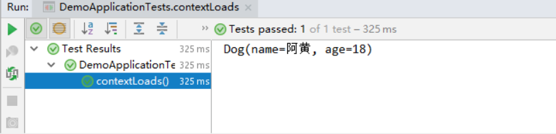</p>
<p>5、我们在编写一个复杂一点的实体类：Person 类</p>
<figure class="highlight java"><table><tr><td class="gutter"><pre><span class="line">1</span><br><span class="line">2</span><br><span class="line">3</span><br><span class="line">4</span><br><span class="line">5</span><br><span class="line">6</span><br><span class="line">7</span><br><span class="line">8</span><br><span class="line">9</span><br><span class="line">10</span><br><span class="line">11</span><br><span class="line">12</span><br></pre></td><td class="code"><pre><span class="line"><span class="meta">@Component</span> <span class="comment">//注册bean到容器中</span></span><br><span class="line"><span class="keyword">public</span> <span class="class"><span class="keyword">class</span> <span class="title">Person</span> </span>&#123;</span><br><span class="line">    <span class="keyword">private</span> String name;</span><br><span class="line">    <span class="keyword">private</span> Integer age;</span><br><span class="line">    <span class="keyword">private</span> Boolean happy;</span><br><span class="line">    <span class="keyword">private</span> Date birth;</span><br><span class="line">    <span class="keyword">private</span> Map&lt;String,Object&gt; maps;</span><br><span class="line">    <span class="keyword">private</span> List&lt;Object&gt; lists;</span><br><span class="line">    <span class="keyword">private</span> Dog dog;</span><br><span class="line">    </span><br><span class="line">    <span class="comment">//有参无参构造、get、set方法、toString()方法  </span></span><br><span class="line">&#125;</span><br></pre></td></tr></table></figure>

<p>6、我们来使用yaml配置的方式进行注入，大家写的时候注意区别和优势，我们编写一个yaml配置！</p>
<figure class="highlight yaml"><table><tr><td class="gutter"><pre><span class="line">1</span><br><span class="line">2</span><br><span class="line">3</span><br><span class="line">4</span><br><span class="line">5</span><br><span class="line">6</span><br><span class="line">7</span><br><span class="line">8</span><br><span class="line">9</span><br><span class="line">10</span><br><span class="line">11</span><br><span class="line">12</span><br><span class="line">13</span><br></pre></td><td class="code"><pre><span class="line"><span class="attr">person:</span></span><br><span class="line">  <span class="attr">name:</span> <span class="string">kamier</span></span><br><span class="line">  <span class="attr">age:</span> <span class="number">3</span></span><br><span class="line">  <span class="attr">happy:</span> <span class="literal">false</span></span><br><span class="line">  <span class="attr">birth:</span> <span class="number">2000</span><span class="string">/01/01</span></span><br><span class="line">  <span class="attr">maps:</span> <span class="string">&#123;k1:</span> <span class="string">v1,k2:</span> <span class="string">v2&#125;</span></span><br><span class="line">  <span class="attr">lists:</span></span><br><span class="line">   <span class="bullet">-</span> <span class="string">code</span></span><br><span class="line">   <span class="bullet">-</span> <span class="string">girl</span></span><br><span class="line">   <span class="bullet">-</span> <span class="string">music</span></span><br><span class="line">  <span class="attr">dog:</span></span><br><span class="line">    <span class="attr">name:</span> <span class="string">旺财</span></span><br><span class="line">    <span class="attr">age:</span> <span class="number">1</span></span><br></pre></td></tr></table></figure>

<p>7、我们刚才已经把person这个对象的所有值都写好了，我们现在来注入到我们的类中！</p>
<figure class="highlight java"><table><tr><td class="gutter"><pre><span class="line">1</span><br><span class="line">2</span><br><span class="line">3</span><br><span class="line">4</span><br><span class="line">5</span><br><span class="line">6</span><br><span class="line">7</span><br><span class="line">8</span><br><span class="line">9</span><br><span class="line">10</span><br><span class="line">11</span><br><span class="line">12</span><br><span class="line">13</span><br><span class="line">14</span><br><span class="line">15</span><br><span class="line">16</span><br><span class="line">17</span><br></pre></td><td class="code"><pre><span class="line"><span class="comment">/*</span></span><br><span class="line"><span class="comment">@ConfigurationProperties作用：</span></span><br><span class="line"><span class="comment">将配置文件中配置的每一个属性的值，映射到这个组件中；</span></span><br><span class="line"><span class="comment">告诉SpringBoot将本类中的所有属性和配置文件中相关的配置进行绑定</span></span><br><span class="line"><span class="comment">参数 prefix = “person” : 将配置文件中的person下面的所有属性一一对应</span></span><br><span class="line"><span class="comment">*/</span></span><br><span class="line"><span class="meta">@Component</span> <span class="comment">//注册bean</span></span><br><span class="line"><span class="meta">@ConfigurationProperties</span>(prefix = <span class="string">"person"</span>)</span><br><span class="line"><span class="keyword">public</span> <span class="class"><span class="keyword">class</span> <span class="title">Person</span> </span>&#123;</span><br><span class="line">    <span class="keyword">private</span> String name;</span><br><span class="line">    <span class="keyword">private</span> Integer age;</span><br><span class="line">    <span class="keyword">private</span> Boolean happy;</span><br><span class="line">    <span class="keyword">private</span> Date birth;</span><br><span class="line">    <span class="keyword">private</span> Map&lt;String,Object&gt; maps;</span><br><span class="line">    <span class="keyword">private</span> List&lt;Object&gt; lists;</span><br><span class="line">    <span class="keyword">private</span> Dog dog;</span><br><span class="line">&#125;</span><br></pre></td></tr></table></figure>

<p>8、IDEA 提示，springboot配置注解处理器没有找到，让我们看文档，我们可以查看文档，找到一个依赖！</p>
<p>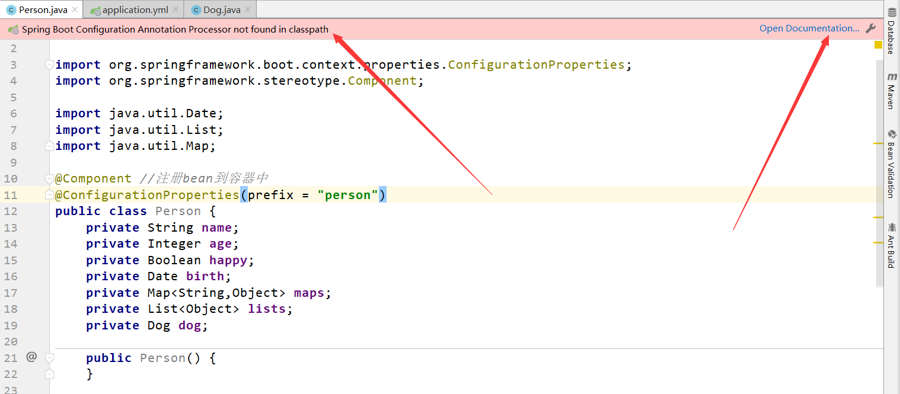</p>
<p>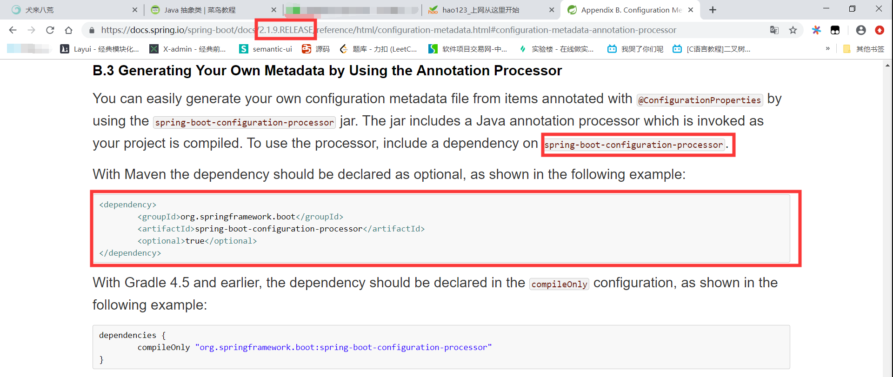</p>
<figure class="highlight xml"><table><tr><td class="gutter"><pre><span class="line">1</span><br><span class="line">2</span><br><span class="line">3</span><br><span class="line">4</span><br><span class="line">5</span><br><span class="line">6</span><br></pre></td><td class="code"><pre><span class="line"><span class="comment">&lt;!-- 导入配置文件处理器，配置文件进行绑定就会有提示，需要重启 --&gt;</span></span><br><span class="line"><span class="tag">&lt;<span class="name">dependency</span>&gt;</span></span><br><span class="line">  <span class="tag">&lt;<span class="name">groupId</span>&gt;</span>org.springframework.boot<span class="tag">&lt;/<span class="name">groupId</span>&gt;</span></span><br><span class="line">  <span class="tag">&lt;<span class="name">artifactId</span>&gt;</span>spring-boot-configuration-processor<span class="tag">&lt;/<span class="name">artifactId</span>&gt;</span></span><br><span class="line">  <span class="tag">&lt;<span class="name">optional</span>&gt;</span>true<span class="tag">&lt;/<span class="name">optional</span>&gt;</span></span><br><span class="line"><span class="tag">&lt;/<span class="name">dependency</span>&gt;</span></span><br></pre></td></tr></table></figure>

<p>9、确认以上配置都OK之后，我们去测试类中测试一下：</p>
<figure class="highlight java"><table><tr><td class="gutter"><pre><span class="line">1</span><br><span class="line">2</span><br><span class="line">3</span><br><span class="line">4</span><br><span class="line">5</span><br><span class="line">6</span><br><span class="line">7</span><br><span class="line">8</span><br><span class="line">9</span><br><span class="line">10</span><br><span class="line">11</span><br><span class="line">12</span><br></pre></td><td class="code"><pre><span class="line"><span class="meta">@SpringBootTest</span></span><br><span class="line"><span class="class"><span class="keyword">class</span> <span class="title">DemoApplicationTests</span> </span>&#123;</span><br><span class="line"></span><br><span class="line">    <span class="meta">@Autowired</span></span><br><span class="line">    Person person; <span class="comment">//将person自动注入进来</span></span><br><span class="line"></span><br><span class="line">    <span class="meta">@Test</span></span><br><span class="line">    <span class="function"><span class="keyword">public</span> <span class="keyword">void</span> <span class="title">contextLoads</span><span class="params">()</span> </span>&#123;</span><br><span class="line">        System.out.println(person); <span class="comment">//打印person信息</span></span><br><span class="line">    &#125;</span><br><span class="line"></span><br><span class="line">&#125;</span><br></pre></td></tr></table></figure>

<p>结果：所有值全部注入成功！全体起立！！！</p>
<p>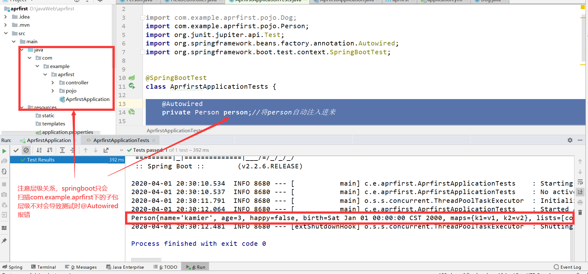</p>
<p><strong>yaml配置注入到实体类完全OK！</strong></p>
<p>课堂测试：</p>
<p>1、将配置文件的key 值 和 属性的值设置为不一样，则结果输出为null，注入失败</p>
<p>2、在配置一个person2，然后将 @ConfigurationProperties(prefix = “person2”) 指向我们的person2；</p>
<h2 id="加载指定的配置文件"><a href="#加载指定的配置文件" class="headerlink" title="加载指定的配置文件"></a>加载指定的配置文件</h2><p><strong>@PropertySource ：</strong>加载指定的配置文件；</p>
<p><strong>@configurationProperties</strong>：默认从全局配置文件中获取值；</p>
<p>1、我们去在resources目录下新建一个<strong>person.properties</strong>文件</p>
<figure class="highlight bash"><table><tr><td class="gutter"><pre><span class="line">1</span><br></pre></td><td class="code"><pre><span class="line">name=chengguo</span><br></pre></td></tr></table></figure>

<p>2、然后在我们的代码中指定加载person.properties文件</p>
<figure class="highlight java"><table><tr><td class="gutter"><pre><span class="line">1</span><br><span class="line">2</span><br><span class="line">3</span><br><span class="line">4</span><br><span class="line">5</span><br><span class="line">6</span><br><span class="line">7</span><br><span class="line">8</span><br><span class="line">9</span><br></pre></td><td class="code"><pre><span class="line"><span class="meta">@PropertySource</span>(value = <span class="string">"classpath:person.properties"</span>)</span><br><span class="line"><span class="meta">@Component</span> <span class="comment">//注册bean</span></span><br><span class="line"><span class="keyword">public</span> <span class="class"><span class="keyword">class</span> <span class="title">Person</span> </span>&#123;</span><br><span class="line"></span><br><span class="line">    <span class="meta">@Value</span>(<span class="string">"$&#123;name&#125;"</span>)</span><br><span class="line">    <span class="keyword">private</span> String name;</span><br><span class="line"></span><br><span class="line">    ......  </span><br><span class="line">&#125;</span><br></pre></td></tr></table></figure>

<p>3、再次输出测试一下：指定配置文件绑定成功！</p>
<p>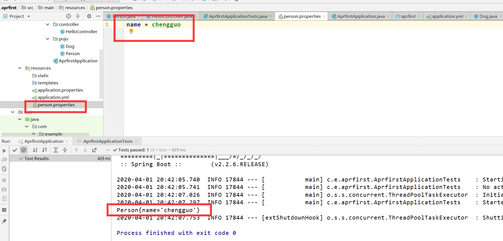</p>
<h2 id="配置文件占位符"><a href="#配置文件占位符" class="headerlink" title="配置文件占位符"></a>配置文件占位符</h2><p>配置文件还可以编写占位符生成随机数</p>
<figure class="highlight yaml"><table><tr><td class="gutter"><pre><span class="line">1</span><br><span class="line">2</span><br><span class="line">3</span><br><span class="line">4</span><br><span class="line">5</span><br><span class="line">6</span><br><span class="line">7</span><br><span class="line">8</span><br><span class="line">9</span><br><span class="line">10</span><br><span class="line">11</span><br><span class="line">12</span><br><span class="line">13</span><br></pre></td><td class="code"><pre><span class="line"><span class="attr">person:</span></span><br><span class="line">    <span class="attr">name:</span> <span class="string">chengguo$&#123;random.uuid&#125;</span> <span class="comment"># 随机uuid</span></span><br><span class="line">    <span class="attr">age:</span> <span class="string">$&#123;random.int&#125;</span>  <span class="comment"># 随机int</span></span><br><span class="line">    <span class="attr">happy:</span> <span class="literal">false</span></span><br><span class="line">    <span class="attr">birth:</span> <span class="number">2000</span><span class="string">/01/01</span></span><br><span class="line">    <span class="attr">maps:</span> <span class="string">&#123;k1:</span> <span class="string">v1,k2:</span> <span class="string">v2&#125;</span></span><br><span class="line">    <span class="attr">lists:</span></span><br><span class="line">      <span class="bullet">-</span> <span class="string">code</span></span><br><span class="line">      <span class="bullet">-</span> <span class="string">girl</span></span><br><span class="line">      <span class="bullet">-</span> <span class="string">music</span></span><br><span class="line">    <span class="attr">dog:</span></span><br><span class="line">      <span class="attr">name:</span> <span class="string">$&#123;person.hello:other&#125;_大力</span></span><br><span class="line">      <span class="attr">age:</span> <span class="number">1</span></span><br></pre></td></tr></table></figure>

<h2 id="回顾properties配置"><a href="#回顾properties配置" class="headerlink" title="回顾properties配置"></a>回顾properties配置</h2><p>我们上面采用的yaml方法都是最简单的方式，开发中最常用的；也是springboot所推荐的！那我们来唠唠其他的实现方式，道理都是相同的；写还是那样写；配置文件除了yml还有我们之前常用的properties ， 我们没有讲，我们来唠唠！</p>
<p>【注意】properties配置文件在写中文的时候，会有乱码 ， 我们需要去IDEA中设置编码格式为UTF-8；</p>
<p>settings–&gt;FileEncodings 中配置；</p>
<p>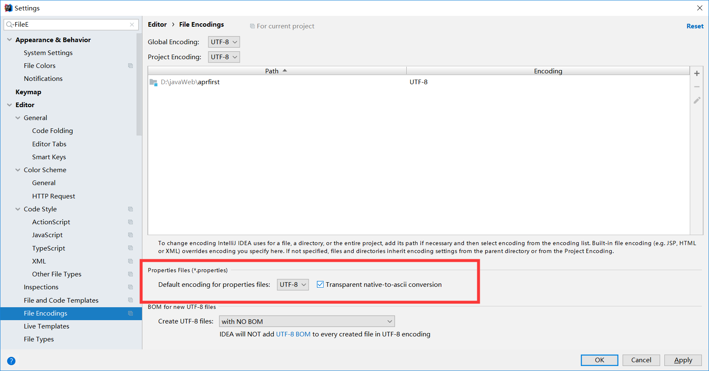</p>
<p><strong>测试步骤：</strong></p>
<p>1、新建一个实体类User</p>
<figure class="highlight java"><table><tr><td class="gutter"><pre><span class="line">1</span><br><span class="line">2</span><br><span class="line">3</span><br><span class="line">4</span><br><span class="line">5</span><br><span class="line">6</span><br></pre></td><td class="code"><pre><span class="line"><span class="meta">@Component</span> <span class="comment">//注册bean</span></span><br><span class="line"><span class="keyword">public</span> <span class="class"><span class="keyword">class</span> <span class="title">User</span> </span>&#123;</span><br><span class="line">    <span class="keyword">private</span> String name;</span><br><span class="line">    <span class="keyword">private</span> <span class="keyword">int</span> age;</span><br><span class="line">    <span class="keyword">private</span> String sex;</span><br><span class="line">&#125;</span><br></pre></td></tr></table></figure>

<p>2、编辑配置文件 user.properties</p>
<figure class="highlight properties"><table><tr><td class="gutter"><pre><span class="line">1</span><br><span class="line">2</span><br><span class="line">3</span><br></pre></td><td class="code"><pre><span class="line"><span class="meta">user1.name</span>=<span class="string">chengguo</span></span><br><span class="line"><span class="meta">user1.age</span>=<span class="string">18</span></span><br><span class="line"><span class="meta">user1.sex</span>=<span class="string">女</span></span><br></pre></td></tr></table></figure>

<p>3、我们在User类上使用@Value来进行注入！</p>
<figure class="highlight java"><table><tr><td class="gutter"><pre><span class="line">1</span><br><span class="line">2</span><br><span class="line">3</span><br><span class="line">4</span><br><span class="line">5</span><br><span class="line">6</span><br><span class="line">7</span><br><span class="line">8</span><br><span class="line">9</span><br><span class="line">10</span><br><span class="line">11</span><br></pre></td><td class="code"><pre><span class="line"><span class="meta">@Component</span> <span class="comment">//注册bean</span></span><br><span class="line"><span class="meta">@PropertySource</span>(value = <span class="string">"classpath:user.properties"</span>)</span><br><span class="line"><span class="keyword">public</span> <span class="class"><span class="keyword">class</span> <span class="title">User</span> </span>&#123;</span><br><span class="line">    <span class="comment">//直接使用@value</span></span><br><span class="line">    <span class="meta">@Value</span>(<span class="string">"$&#123;user.name&#125;"</span>) <span class="comment">//从配置文件中取值</span></span><br><span class="line">    <span class="keyword">private</span> String name;</span><br><span class="line">    <span class="meta">@Value</span>(<span class="string">"#&#123;9*2&#125;"</span>)  <span class="comment">// #&#123;SPEL&#125; Spring表达式</span></span><br><span class="line">    <span class="keyword">private</span> <span class="keyword">int</span> age;</span><br><span class="line">    <span class="meta">@Value</span>(<span class="string">"女"</span>)  <span class="comment">// 字面量</span></span><br><span class="line">    <span class="keyword">private</span> String sex;</span><br><span class="line">&#125;</span><br></pre></td></tr></table></figure>

<p>4、Springboot测试</p>
<figure class="highlight java"><table><tr><td class="gutter"><pre><span class="line">1</span><br><span class="line">2</span><br><span class="line">3</span><br><span class="line">4</span><br><span class="line">5</span><br><span class="line">6</span><br><span class="line">7</span><br><span class="line">8</span><br><span class="line">9</span><br><span class="line">10</span><br><span class="line">11</span><br><span class="line">12</span><br></pre></td><td class="code"><pre><span class="line"><span class="meta">@SpringBootTest</span></span><br><span class="line"><span class="class"><span class="keyword">class</span> <span class="title">DemoApplicationTests</span> </span>&#123;</span><br><span class="line"></span><br><span class="line">    <span class="meta">@Autowired</span></span><br><span class="line">    User user;</span><br><span class="line"></span><br><span class="line">    <span class="meta">@Test</span></span><br><span class="line">    <span class="function"><span class="keyword">public</span> <span class="keyword">void</span> <span class="title">contextLoads</span><span class="params">()</span> </span>&#123;</span><br><span class="line">        System.out.println(user);</span><br><span class="line">    &#125;</span><br><span class="line"></span><br><span class="line">&#125;</span><br></pre></td></tr></table></figure>

<p>结果正常输出：</p>
<p>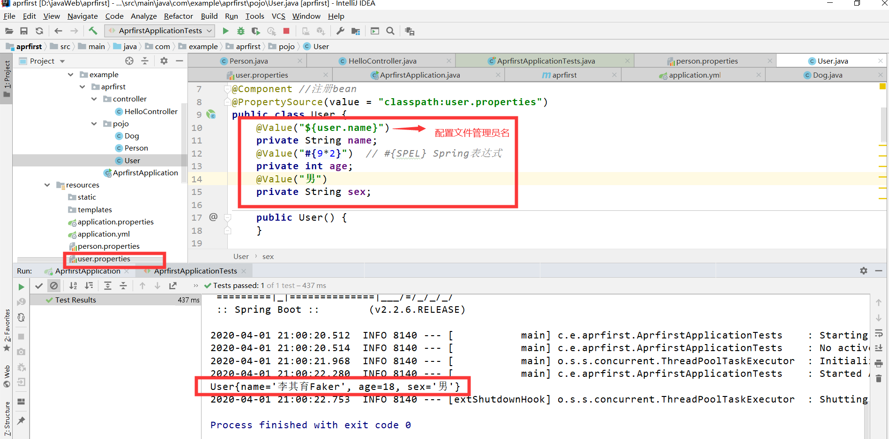</p>
<h2 id="对比小结"><a href="#对比小结" class="headerlink" title="对比小结"></a>对比小结</h2><p>@Value这个使用起来并不友好！我们需要为每个属性单独注解赋值，比较麻烦；我们来看个功能对比图</p>
<p>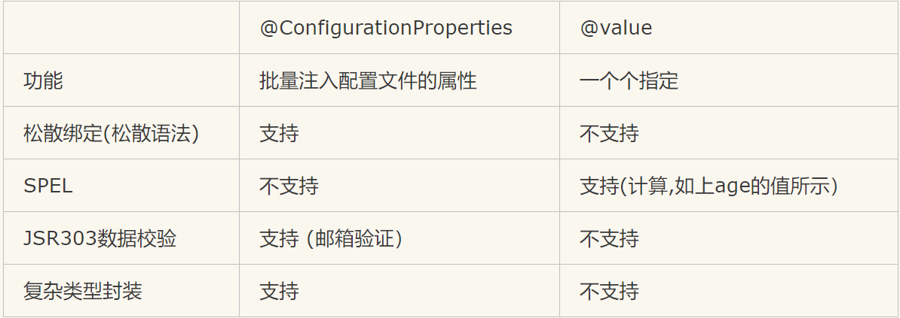</p>
<p>1、@ConfigurationProperties只需要写一次即可 ， @Value则需要每个字段都添加</p>
<p>2、松散绑定：这个什么意思呢? 比如我的yml中写的last-name，这个和lastName是一样的， - 后面跟着的字母默认是大写的。这就是松散绑定。可以测试一下</p>
<p>3、JSR303数据校验 ， 这个就是我们可以在字段是增加一层过滤器验证 ， 可以保证数据的合法性</p>
<p>4、复杂类型封装，yml中可以封装对象 ， 使用value就不支持</p>
<p><strong>结论：</strong></p>
<p>配置yml和配置properties都可以获取到值 ， 强烈推荐 yml；</p>
<p>如果我们在某个业务中，只需要获取配置文件中的某个值，可以使用一下 @value；</p>
<p>如果说，我们专门编写了一个JavaBean来和配置文件进行一一映射，就直接@configurationProperties，不要犹豫！干就完了，奥利给！</p>

      
      <!-- reward -->
      
    </div>
    
    
      <!-- copyright -->
      
    <footer class="article-footer">
      
      
  <ul class="article-tag-list" itemprop="keywords"><li class="article-tag-list-item"><a class="article-tag-list-link" href="/tags/Spring/" rel="tag">Spring</a></li></ul>


    </footer>

  </div>

  

  
  
  

  

</article>
    
    <article id="post-SpringBoot02：运行原理初探" class="article article-type-post" itemscope
  itemprop="blogPost" data-scroll-reveal>

  <div class="article-inner">
    
    <header class="article-header">
       
<h2 itemprop="name">
  <a class="article-title" href="/2020/04/01/SpringBoot02%EF%BC%9A%E8%BF%90%E8%A1%8C%E5%8E%9F%E7%90%86%E5%88%9D%E6%8E%A2/"
    >SpringBoot02：运行原理初探</a
  >
</h2>
  

    </header>
    

    
    <div class="article-meta">
      <a href="/2020/04/01/SpringBoot02%EF%BC%9A%E8%BF%90%E8%A1%8C%E5%8E%9F%E7%90%86%E5%88%9D%E6%8E%A2/" class="article-date">
  <time datetime="2020-04-01T03:57:55.000Z" itemprop="datePublished">2020-04-01</time>
</a>
      
      
      
      
    </div>
    

    

    
    <div class="article-entry" itemprop="articleBody">
      


      

      
      <h2 id="运行原理探究"><a href="#运行原理探究" class="headerlink" title="运行原理探究"></a>运行原理探究</h2><p>我们之前写的HelloSpringBoot，到底是怎么运行的呢，Maven项目，我们一般从pom.xml文件探究起；</p>
      
      <a class="article-more-link" href="/2020/04/01/SpringBoot02%EF%BC%9A%E8%BF%90%E8%A1%8C%E5%8E%9F%E7%90%86%E5%88%9D%E6%8E%A2/">阅读更多...</a>
      
      
      <!-- reward -->
      
    </div>
    
    
      <!-- copyright -->
      
    <footer class="article-footer">
      
      
  <ul class="article-tag-list" itemprop="keywords"><li class="article-tag-list-item"><a class="article-tag-list-link" href="/tags/Spring/" rel="tag">Spring</a></li></ul>


    </footer>

  </div>

  

  
  
  

  

</article>
    
    <article id="post-SpringBoot01：Hello-World！" class="article article-type-post" itemscope
  itemprop="blogPost" data-scroll-reveal>

  <div class="article-inner">
    
    <header class="article-header">
       
<h2 itemprop="name">
  <a class="article-title" href="/2020/04/01/SpringBoot01%EF%BC%9AHello-World%EF%BC%81/"
    >SpringBoot01：Hello,World！</a
  >
</h2>
  

    </header>
    

    
    <div class="article-meta">
      <a href="/2020/04/01/SpringBoot01%EF%BC%9AHello-World%EF%BC%81/" class="article-date">
  <time datetime="2020-04-01T03:24:30.000Z" itemprop="datePublished">2020-04-01</time>
</a>
      
      
      
      
    </div>
    

    

    
    <div class="article-entry" itemprop="articleBody">
      


      

      
      <h2 id="回顾什么是Spring"><a href="#回顾什么是Spring" class="headerlink" title="回顾什么是Spring"></a>回顾什么是Spring</h2><p>Spring是一个开源框架，2003 年兴起的一个轻量级的Java 开发框架，作者：Rod Johnson  。</p>
<p><strong>Spring是为了解决企业级应用开发的复杂性而创建的，简化开发。</strong></p>
      
      <a class="article-more-link" href="/2020/04/01/SpringBoot01%EF%BC%9AHello-World%EF%BC%81/">阅读更多...</a>
      
      
      <!-- reward -->
      
    </div>
    
    
      <!-- copyright -->
      
    <footer class="article-footer">
      
      
  <ul class="article-tag-list" itemprop="keywords"><li class="article-tag-list-item"><a class="article-tag-list-link" href="/tags/Spring/" rel="tag">Spring</a></li></ul>


    </footer>

  </div>

  

  
  
  

  

</article>
    
    <article id="post-Java学习路线" class="article article-type-post" itemscope
  itemprop="blogPost" data-scroll-reveal>

  <div class="article-inner">
    
    <header class="article-header">
       
<h2 itemprop="name">
  <a class="article-title" href="/2020/04/01/Java%E5%AD%A6%E4%B9%A0%E8%B7%AF%E7%BA%BF/"
    >Java学习路线</a
  >
</h2>
  

    </header>
    

    
    <div class="article-meta">
      <a href="/2020/04/01/Java%E5%AD%A6%E4%B9%A0%E8%B7%AF%E7%BA%BF/" class="article-date">
  <time datetime="2020-04-01T03:01:06.000Z" itemprop="datePublished">2020-04-01</time>
</a>
      
      
      
      
    </div>
    

    

    
    <div class="article-entry" itemprop="articleBody">
      


      

      
      <p>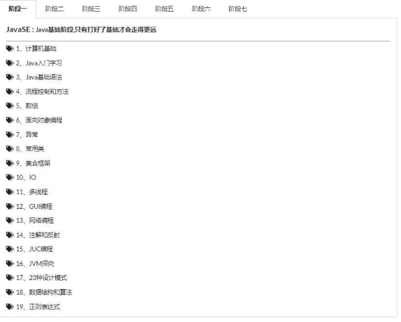</p>
<p>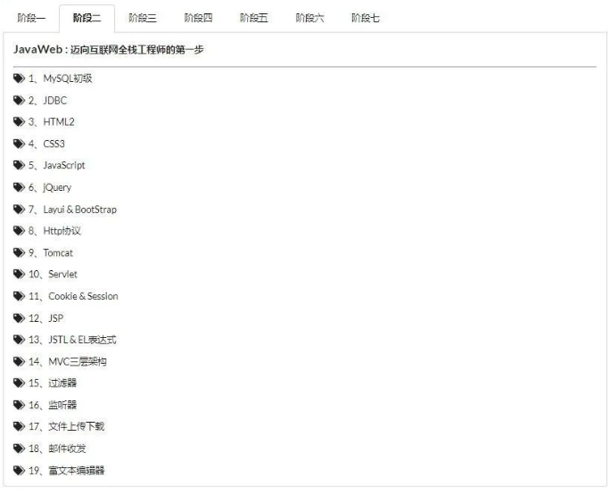</p>
<p>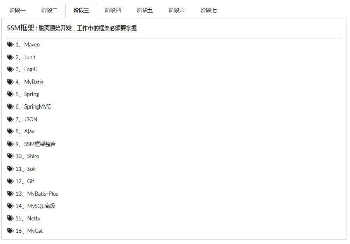</p>
<p>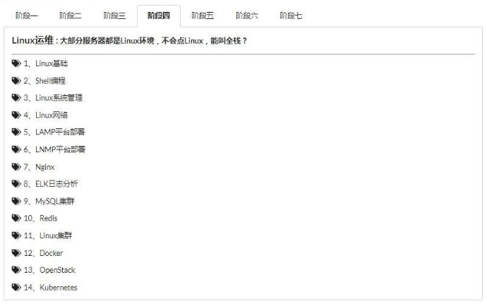</p>
<p>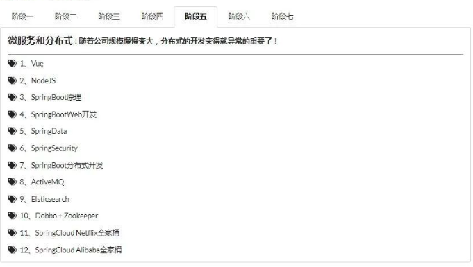</p>
<p></p>
<p>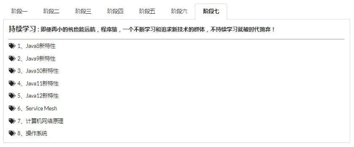</p>
<h2 id="写在最后"><a href="#写在最后" class="headerlink" title="写在最后"></a>写在最后</h2><p>成为一个合格的工程师需要 1~3 年时间，最好的学习方法就是找经典的书籍系统地学习，而不要遇到一个问题到网上搜搜然后就解决了事。例如 Java 的各种数据结构的实现原理，因为只有深入掌握了这些实现原理，才能对其优缺点和使用场景有深刻理解，这样在做具体方案设计的时候才能选择合适的数据结构。</p>
<p>针对技术深度，我的建议还是系统地学习，包括看书和研究源码。例如，研究 Java 虚拟机可以看《深入理解 Java 虚拟机》、研究 MySQL 可以看《MySQL 技术内幕：InnoDB 存储引擎》、研究 Memcache 可以去看其源码。</p>

      
      <!-- reward -->
      
    </div>
    
    
      <!-- copyright -->
      
    <footer class="article-footer">
      
      
  <ul class="article-tag-list" itemprop="keywords"><li class="article-tag-list-item"><a class="article-tag-list-link" href="/tags/java/" rel="tag">java</a></li></ul>


    </footer>

  </div>

  

  
  
  

  

</article>
    
    <article id="post-再读Response" class="article article-type-post" itemscope
  itemprop="blogPost" data-scroll-reveal>

  <div class="article-inner">
    
    <header class="article-header">
       
<h2 itemprop="name">
  <a class="article-title" href="/2020/03/28/%E5%86%8D%E8%AF%BBResponse/"
    >再读Response——源生验证码</a
  >
</h2>
  

    </header>
    

    
    <div class="article-meta">
      <a href="/2020/03/28/%E5%86%8D%E8%AF%BBResponse/" class="article-date">
  <time datetime="2020-03-28T14:06:27.000Z" itemprop="datePublished">2020-03-28</time>
</a>
      
      
      
      
    </div>
    

    

    
    <div class="article-entry" itemprop="articleBody">
      


      

      
      <p>源生代码Response请求返回一个简洁的验证码</p>
      
      <a class="article-more-link" href="/2020/03/28/%E5%86%8D%E8%AF%BBResponse/">阅读更多...</a>
      
      
      <!-- reward -->
      
    </div>
    
    
      <!-- copyright -->
      
    <footer class="article-footer">
      
      

    </footer>

  </div>

  

  
  
  

  

</article>
    
    <article id="post-如何给老婆解释什么是Restful" class="article article-type-post" itemscope
  itemprop="blogPost" data-scroll-reveal>

  <div class="article-inner">
    
    <header class="article-header">
       
<h2 itemprop="name">
  <a class="article-title" href="/2020/03/28/%E5%A6%82%E4%BD%95%E7%BB%99%E8%80%81%E5%A9%86%E8%A7%A3%E9%87%8A%E4%BB%80%E4%B9%88%E6%98%AFRestful/"
    >如何给老婆解释什么是Restful</a
  >
</h2>
  

    </header>
    

    
    <div class="article-meta">
      <a href="/2020/03/28/%E5%A6%82%E4%BD%95%E7%BB%99%E8%80%81%E5%A9%86%E8%A7%A3%E9%87%8A%E4%BB%80%E4%B9%88%E6%98%AFRestful/" class="article-date">
  <time datetime="2020-03-28T12:48:36.000Z" itemprop="datePublished">2020-03-28</time>
</a>
      
      
      
      
    </div>
    

    

    
    <div class="article-entry" itemprop="articleBody">
      


      

      
      <p>老婆经常喜欢翻看我订阅的技术杂志，她总能从她的视角提出很多有趣的问题。</p>
<p>一个悠闲的周日下午，她午觉醒来，又习惯性的抓起这个月的杂志，饶有兴趣地看了起来。</p>
<p>果不其然，看着看着，她又对我发难了，“Restful是什么呀，老公？是restaurant的形容词吗，突然就觉得好饿了啊……”</p>
      
      <a class="article-more-link" href="/2020/03/28/%E5%A6%82%E4%BD%95%E7%BB%99%E8%80%81%E5%A9%86%E8%A7%A3%E9%87%8A%E4%BB%80%E4%B9%88%E6%98%AFRestful/">阅读更多...</a>
      
      
      <!-- reward -->
      
    </div>
    
    
      <!-- copyright -->
      
    <footer class="article-footer">
      
      

    </footer>

  </div>

  

  
  
  

  

</article>
    
    <article id="post-怎样优雅的自定义Typora" class="article article-type-post" itemscope
  itemprop="blogPost" data-scroll-reveal>

  <div class="article-inner">
    
    <header class="article-header">
       
<h2 itemprop="name">
  <a class="article-title" href="/2020/03/28/%E6%80%8E%E6%A0%B7%E4%BC%98%E9%9B%85%E7%9A%84%E8%87%AA%E5%AE%9A%E4%B9%89Typora/"
    >怎样优雅的自定义Typora</a
  >
</h2>
  

    </header>
    

    
    <div class="article-meta">
      <a href="/2020/03/28/%E6%80%8E%E6%A0%B7%E4%BC%98%E9%9B%85%E7%9A%84%E8%87%AA%E5%AE%9A%E4%B9%89Typora/" class="article-date">
  <time datetime="2020-03-28T11:30:16.000Z" itemprop="datePublished">2020-03-28</time>
</a>
      
      
      
      
    </div>
    

    

    
    <div class="article-entry" itemprop="articleBody">
      


      

      
      <h1 id="更改所有文本字体"><a href="#更改所有文本字体" class="headerlink" title="更改所有文本字体"></a>更改所有文本字体</h1><ol>
<li><p>找到你的主题路径，例如我的：C:\Users\17159\AppData\Roaming\Typora\themes</p>
</li>
<li><p>找到你想重置的主题css文件，例如我的：solarized.css</p>
</li>
<li><p>ctrl+f 替换所有的 <strong>font-family</strong> 为 <strong>font-family: ‘新字体’,</strong> 例如我的<strong>‘Open Sans’</strong>,所以我把全局的 <strong>font-family</strong> 替换为 <strong>font-family: ‘Open Sans’,</strong></p>
</li>
<li><p>同理可证其他的主体其他的样式</p>
</li>
</ol>

      
      <!-- reward -->
      
    </div>
    
    
      <!-- copyright -->
      
    <footer class="article-footer">
      
      

    </footer>

  </div>

  

  
  
  

  

</article>
    
    <article id="post-怎样优雅的自定义Typora呢" class="article article-type-post" itemscope
  itemprop="blogPost" data-scroll-reveal>

  <div class="article-inner">
    
    <header class="article-header">
       
<h2 itemprop="name">
  <a class="article-title" href="/2020/03/28/%E6%80%8E%E6%A0%B7%E4%BC%98%E9%9B%85%E7%9A%84%E8%87%AA%E5%AE%9A%E4%B9%89Typora%E5%91%A2/"
    >怎样优雅的自定义Typora</a
  >
</h2>
  

    </header>
    

    
    <div class="article-meta">
      <a href="/2020/03/28/%E6%80%8E%E6%A0%B7%E4%BC%98%E9%9B%85%E7%9A%84%E8%87%AA%E5%AE%9A%E4%B9%89Typora%E5%91%A2/" class="article-date">
  <time datetime="2020-03-28T11:30:16.000Z" itemprop="datePublished">2020-03-28</time>
</a>
      
      
      
      
    </div>
    

    

    
    <div class="article-entry" itemprop="articleBody">
      


      

      
      <h1 id="更改所有文本字体"><a href="#更改所有文本字体" class="headerlink" title="更改所有文本字体"></a>更改所有文本字体</h1><ol>
<li>找到你的主题路径，例如我的：C:\Users\17159\AppData\Roaming\Typora\themes</li>
<li>找到你想重置的主题css文件，例如我的：solarized.css</li>
<li>ctrl+f 替换所有的 <strong>font-family</strong> 为 <strong>font-family: ‘新字体’,</strong> 例如我的<strong>‘Open Sans’</strong>,所以我把全局的 <strong>font-family</strong> 替换为 <strong>font-family: ‘Open Sans’,</strong></li>
<li>同理可证其他的主体其他的样式</li>
</ol>

      
      <!-- reward -->
      
    </div>
    
    
      <!-- copyright -->
      
    <footer class="article-footer">
      
      

    </footer>

  </div>

  

  
  
  

  

</article>
    
  </article>
  

  
  <nav class="page-nav">
    
    <span class="page-number current">1</span><a class="page-number" href="/page/2/">2</a><a class="page-number" href="/page/3/">3</a><a class="extend next" rel="next" href="/page/2/">下一页</a>
  </nav>
  
</section>
</div>

      <footer class="footer">
  <div class="outer">
    <ul class="list-inline">
      <li>
        &copy;
        2020
        花重锦官城
      </li>
      <li>
        
      </li>
    </ul>
    <ul class="list-inline">
      <li>
        
        
        <span>
  <kbd>访问量:<span id="busuanzi_value_page_pv"></span></kbd>
  <kbd>访客数:<span id="busuanzi_value_site_uv"></span></kbd>
</span>
        
      </li>
      
      <li>
        <!-- cnzz统计 -->
        
      </li>
    </ul>
  </div>
</footer>
      <div class="to_top">
        <div class="totop" id="totop">
  <i class="ri-arrow-up-line"></i>
</div>
      </div>
    </main>
    <aside class="sidebar">
      <button class="navbar-toggle"></button>
<nav class="navbar">
  
  <div class="logo">
    <a href="/"></a>
  </div>
  
  <ul class="nav nav-main">
    
    <li class="nav-item">
      <a class="nav-item-link" href="/">主页</a>
    </li>
    
    <li class="nav-item">
      <a class="nav-item-link" href="/archives">目录</a>
    </li>
    
    <li class="nav-item">
      <a class="nav-item-link" href="/categories">分类</a>
    </li>
    
    <li class="nav-item">
      <a class="nav-item-link" href="/tags">标签</a>
    </li>
    
    <li class="nav-item">
      <a class="nav-item-link" href="/tags/%E6%97%85%E8%A1%8C/">旅行</a>
    </li>
    
    <li class="nav-item">
      <a class="nav-item-link" href="https://chengguolaogongya.lofter.com/" target="_blank" rel="noopener">摄影</a>
    </li>
    
    <li class="nav-item">
      <a class="nav-item-link" href="/2019/about">关于我</a>
    </li>
    
  </ul>
</nav>
<nav class="navbar navbar-bottom">
  <ul class="nav">
    <li class="nav-item">
      
      <a class="nav-item-link nav-item-search"  title="Search">
        <i class="ri-search-line"></i>
      </a>
      
      
      <a class="nav-item-link" target="_blank" href="/atom.xml" title="RSS Feed">
        <i class="ri-rss-line"></i>
      </a>
      
    </li>
  </ul>
</nav>
<div class="search-form-wrap">
  <div class="local-search local-search-plugin">
  <input type="search" id="local-search-input" class="local-search-input" placeholder="Search...">
  <div id="local-search-result" class="local-search-result"></div>
</div>
</div>
    </aside>
    <div id="mask"></div>

<!-- #reward -->
<div id="reward">
  <span class="close"><i class="ri-close-line"></i></span>
  <p class="reward-p"><i class="ri-cup-line"></i>请我喝杯咖啡吧~</p>
  <div class="reward-box">
    
    <div class="reward-item">
      
      <span class="reward-type">支付宝</span>
    </div>
    
    
    <div class="reward-item">
      
      <span class="reward-type">微信</span>
    </div>
    
  </div>
</div>
    
<script src="/js/jquery-2.0.3.min.js"></script>


<script src="/js/jquery.justifiedGallery.min.js"></script>


<script src="/js/lazyload.min.js"></script>


<script src="/js/busuanzi-2.3.pure.min.js"></script>


<script src="/js/share.js"></script>


<script src="/fancybox/jquery.fancybox.min.js"></script>


<script>
  try {
    var typed = new Typed("#subtitle", {
    strings: ['浮生有梦三千场 穷尽千里诗酒荒','徒把理想倾倒','不如早还乡'],
    startDelay: 0,
    typeSpeed: 100,
    loop: true,
    backSpeed: 100,
    showCursor: true
    });
  } catch (err) {
  }
  
</script>


<script>
  var ayerConfig = {
    mathjax: false
  }
</script>


<script src="/js/ayer.js"></script>


<script src="https://cdn.jsdelivr.net/npm/jquery-modal@0.9.2/jquery.modal.min.js"></script>
<link rel="stylesheet" href="https://cdn.jsdelivr.net/npm/jquery-modal@0.9.2/jquery.modal.min.css">


<!-- Root element of PhotoSwipe. Must have class pswp. -->
<div class="pswp" tabindex="-1" role="dialog" aria-hidden="true">

    <!-- Background of PhotoSwipe. 
         It's a separate element as animating opacity is faster than rgba(). -->
    <div class="pswp__bg"></div>

    <!-- Slides wrapper with overflow:hidden. -->
    <div class="pswp__scroll-wrap">

        <!-- Container that holds slides. 
            PhotoSwipe keeps only 3 of them in the DOM to save memory.
            Don't modify these 3 pswp__item elements, data is added later on. -->
        <div class="pswp__container">
            <div class="pswp__item"></div>
            <div class="pswp__item"></div>
            <div class="pswp__item"></div>
        </div>

        <!-- Default (PhotoSwipeUI_Default) interface on top of sliding area. Can be changed. -->
        <div class="pswp__ui pswp__ui--hidden">

            <div class="pswp__top-bar">

                <!--  Controls are self-explanatory. Order can be changed. -->

                <div class="pswp__counter"></div>

                <button class="pswp__button pswp__button--close" title="Close (Esc)"></button>

                <button class="pswp__button pswp__button--share" style="display:none" title="Share"></button>

                <button class="pswp__button pswp__button--fs" title="Toggle fullscreen"></button>

                <button class="pswp__button pswp__button--zoom" title="Zoom in/out"></button>

                <!-- Preloader demo http://codepen.io/dimsemenov/pen/yyBWoR -->
                <!-- element will get class pswp__preloader--active when preloader is running -->
                <div class="pswp__preloader">
                    <div class="pswp__preloader__icn">
                        <div class="pswp__preloader__cut">
                            <div class="pswp__preloader__donut"></div>
                        </div>
                    </div>
                </div>
            </div>

            <div class="pswp__share-modal pswp__share-modal--hidden pswp__single-tap">
                <div class="pswp__share-tooltip"></div>
            </div>

            <button class="pswp__button pswp__button--arrow--left" title="Previous (arrow left)">
            </button>

            <button class="pswp__button pswp__button--arrow--right" title="Next (arrow right)">
            </button>

            <div class="pswp__caption">
                <div class="pswp__caption__center"></div>
            </div>

        </div>

    </div>

</div>

<link rel="stylesheet" href="https://cdn.jsdelivr.net/npm/photoswipe@4.1.3/dist/photoswipe.min.css">
<link rel="stylesheet" href="https://cdn.jsdelivr.net/npm/photoswipe@4.1.3/dist/default-skin/default-skin.css">
<script src="https://cdn.jsdelivr.net/npm/photoswipe@4.1.3/dist/photoswipe.min.js"></script>
<script src="https://cdn.jsdelivr.net/npm/photoswipe@4.1.3/dist/photoswipe-ui-default.min.js"></script>

<script>
    function viewer_init() {
        let pswpElement = document.querySelectorAll('.pswp')[0];
        let $imgArr = document.querySelectorAll(('.article-entry img:not(.reward-img)'))

        $imgArr.forEach(($em, i) => {
            $em.onclick = () => {
                // slider展开状态
                // todo: 这样不好，后面改成状态
                if (document.querySelector('.left-col.show')) return
                let items = []
                $imgArr.forEach(($em2, i2) => {
                    let img = $em2.getAttribute('data-idx', i2)
                    let src = $em2.getAttribute('data-target') || $em2.getAttribute('src')
                    let title = $em2.getAttribute('alt')
                    // 获得原图尺寸
                    const image = new Image()
                    image.src = src
                    items.push({
                        src: src,
                        w: image.width || $em2.width,
                        h: image.height || $em2.height,
                        title: title
                    })
                })
                var gallery = new PhotoSwipe(pswpElement, PhotoSwipeUI_Default, items, {
                    index: parseInt(i)
                });
                gallery.init()
            }
        })
    }
    viewer_init()
</script>


<script type="text/javascript" src="https://js.users.51.la/20544303.js"></script>

    
    <div id="music">
    
    
    
    <iframe frameborder="no" border="1" marginwidth="0" marginheight="0" width="200" height="52"
        src="//music.163.com/outchain/player?type=2&id=1321020935&auto=1&height=32"></iframe>
</div>

<style>
    #music {
        position: fixed;
        right: 15px;
        bottom: 0;
        z-index: 998;
    }
</style>
    
  </div>
</body>

</html>